1. Introduction
1.1. Purpose
The purpose of this document is to explain the procedures of the MONARC method by describing the various steps offered by the tool.
1.2. Other documents
|
1.3. Syntax used in the document
All numbers in white on a red background are used on print-screen views to provide additional explanations. Explanations are always after the view with the corresponding numbering. i.e. 1. |
|
MONARC Reference |
1.4. Syntax used in MONARC
Button that always brings up the menu. |
Creating/adding something in context (assets, recommendations, etc.). |
Most fields of MONARC display additional information when the pointer stay unmoved some time. |
Export any table (.csv) or graphic (.png). |
2. Monarc Method
MONARC is an iterative and qualitative method of risk analysis in four stages; broadly inspired by ISO/IEC 27005.
2.1. Iterative Method
MONARC uses an iterative method which enables the pragmatic progression of risk management. This approach, as recommended by ISO 27005, enables the user to restrict himself to the essentials, then to carry out successive iterations to broaden the target or further refine it to cover more technical aspects. The optimised risk models provided as standard with the tool will enable this type of management to be carried out.
-
Context establishment: Definition of the target of the risk analysis, establishing and describing the context, defining the risk analysis criteria and the structure of the risk approach. -
Context modelling: Development phase of the risk model. After having identified the primary assets, they just need to be broken down into support assets on a priority basis. The most common assets are present in the MONARC knowledge base and therefore identification of risk by default is offered. This type of identification may be sufficient in an initial risk iteration; however, it is the responsibility of the risk expert to provide the comprehensive model. -
Evaluation and treatment of risks: Risk assessment involves establishing the level of threats and vulnerabilities of the context type under review. The processing of risk entails proposing security measures which tend to lower major risks to acceptable levels and to accept low risks. -
Implementation and monitoring: The current MONARC version provides a follow-ups views in terms of the implementation of recommendations. Monitoring involves checking the major changes to the risk analysis context on a regular basis, as well as any major changes beyond said context which would imply a redesign of an analysis iteration.
2.2. Qualitative method
MONARC is a Qualitative method,
|
the risk parameters are determined on a contextual digital scale which enables the risks to be prioritised. |
This approach is based on ISO/IEC 27005 as it is easier to understand, especially for non-tangible criteria in terms of impact and consequences, such as reputation, operational, legal, etc.
2.3. Method broadly based on ISO/IEC 27005
The illustration above displays the similarities between ISO/IEC 27005 and MONARC.
The sub-stages provided by the method are also in line with ISO/IEC 27005:
2.4. Access to methodology screens
Access to the views of the various stages of the method is provided by clicking on the numbers 1 to 4, which are displayed under the Breadcrumbs in the main MONARC view.
The ISO/IEC 27005 processes are implemented via the views.
2.5. Details of the stages
-
Ticking the boxes enables the user to develop the progress status of the method
-
Clicking on the heading provides access to the management contextual sub-screen
3. Context Establishment
By clicking on number 1, the following menu will appear:
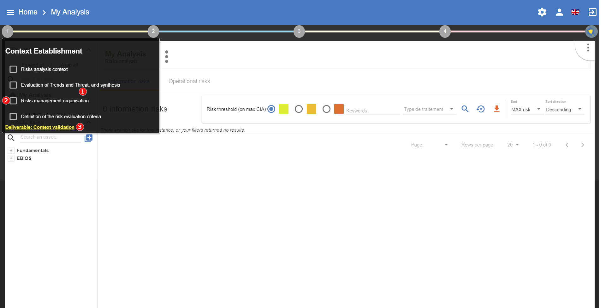
-
Link to the contextual management pop-ups, see the following chapters.
-
Boxes to tick, indicating that the stage selected has closed. This optional information helps to show the progress of the risk analysis project and display the risk representation graph of the dashboard.
-
Link enabling the
Validation of the contextdeliverable to be generated. As part of a consultancy assignment, for instance, it may be helpful to get the client to validate it.
3.1. Risk analysis context
This view offers text encoding and formatting functions, enabling the risk analysis target to be contextualised with well-formatted texts that will be documented in the deliverables.
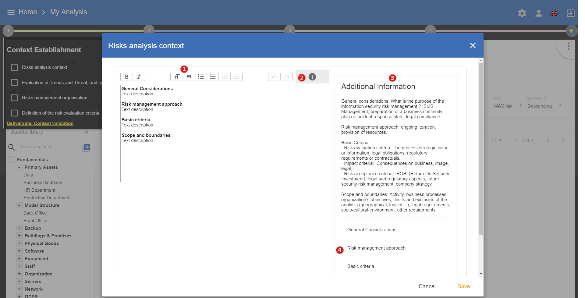
-
Access to the text formatting functions (bold, italics, paragraph, text size, etc.). The quality of the encoding directly affects that of the deliverable.
-
To display or delete the help area.
-
Help area on the content which is recommended for data entry (
Additional information). -
Chapters recommended by ISO27005. Clicking on the label will place it automatically in the data entry area.
3.2. Evaluation of the trends, threats and synthesis
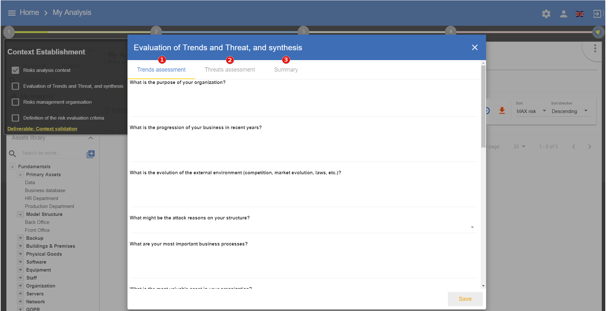
This stage is divided into three separate parts which structures the data collection necessary for understanding the context to analyse. It is advisable to chair a working party of 5 to 10 people (depending on the organisation), bringing together the members of management, IT, risk management department (if it exists), the heads of departments or key personnel.
-
Trends Assessment: MONARC provides a series of questions to establish the context from a very general perspective (see Trends Assessment). -
Threats Assessment: Enables the threats to be reviewed from a general viewpoint and, possibly, to evaluate by default in the future model (for more information, see Threats Assessment). -
Summaryof key points determined during stages 1 and 2 (for more information, see Summary).
3.2.1. Trends Assessment
The assessment of trends provides a series of questions to establish the context from a very general perspective. These questions highlight the selection of key assets which must be taken into account during the analysis, the security criteria, as well as a few indicators concerning the motives of the attack and the external context of the target. This list is not exhaustive; you can add questions of your choice at the end of the page.
3.2.2. Threats Assessment
The assessment of threats, in similar fashion to the assessment of trends, takes the form of a meeting involving key personnel in the organisation. The purpose is to review the majority of threats by gathering information on the past and reviewing the general observations made by the group. The principle is to obtain a consensus on the probability of the threat on a scale which is easy to interpret:
-
Relatively
-: Never occurred, really not likely -
Normal
n: No clear position, no opinion -
Relatively
+: Already occurred -
Relatively
++: Already occurred on one or two occasions The security expert is responsible for converting the consensus into a probability value of 1 to n which shall be used in the model.
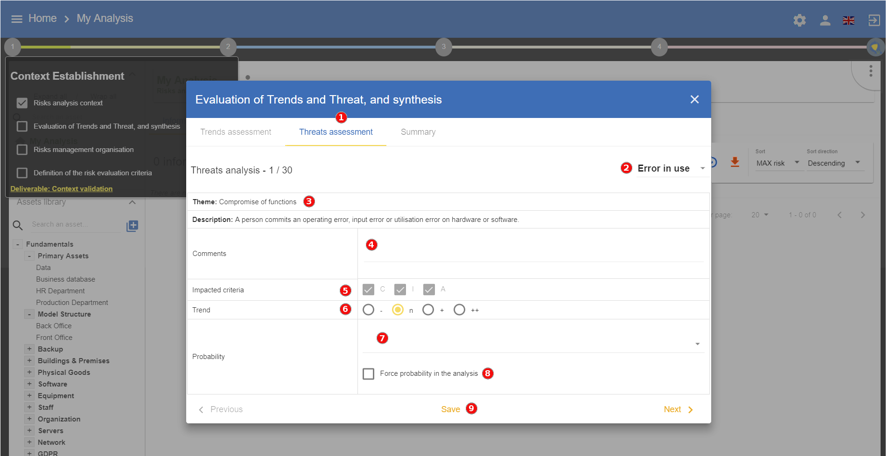
-
Click on the
Threats assessmenttab. -
Heading of the threat.
-
Information on the threat.
-
Observation to encode, information gathering from a group of persons.
-
Information on the security criteria affected by the threat.
-
Choice of the trend, obtained by group consensus.
-
Selection of the probability deduced from point 6 by the security expert.
-
Possibility of subsequently running the threats of the model (after they have been developed).
-
Savethe information and browse the threats.
|
For point 7 and 8, you have to set the scales of your risk analysis to unhide this funtion (see Definition of the risk evaluation criteria) |
3.2.3. Summary
In similar fashion to the context of the risk analysis, this view enables the user to summarise the pertinent information gathered during the assessment of trends and threats. This text enables the user to enrich the deliverable.
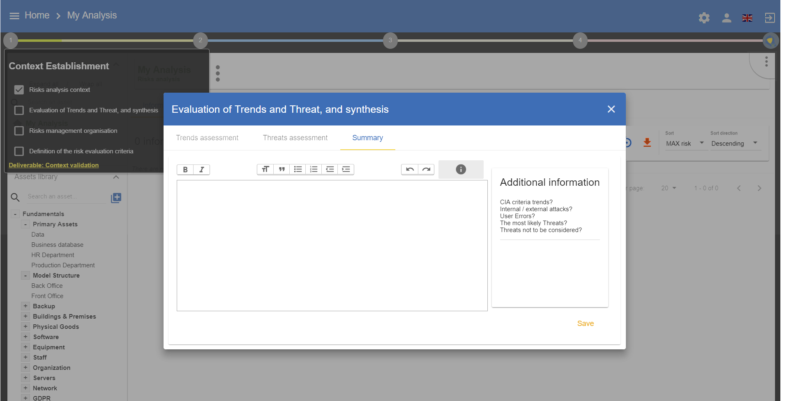
3.3. Risks management organisation
This view enables the user to encode the information on the context of the risk management, for instance, with regard to the roles and responsibilities, the stakeholders, etc.
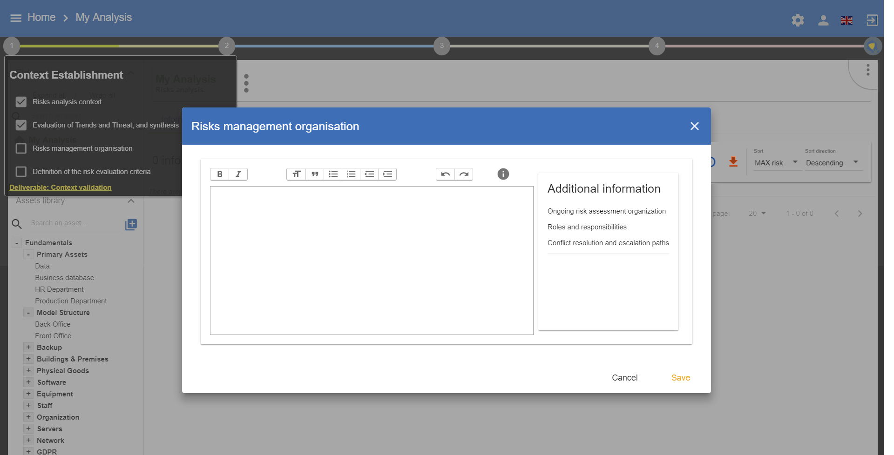
|
For more information, please see chapter 7.4, of ISO/IEC 27005:2011 |
3.4. Definition of the risk evaluation criteria
This involves personalising the scales and impact criteria and consequences. MONARC provides values by default which can be personalised depending on the context. All the scales can be modified and the levels personalised. However, it is no longer possible to modify the scales when an assessment has been encoded.
3.4.1. Impact scale
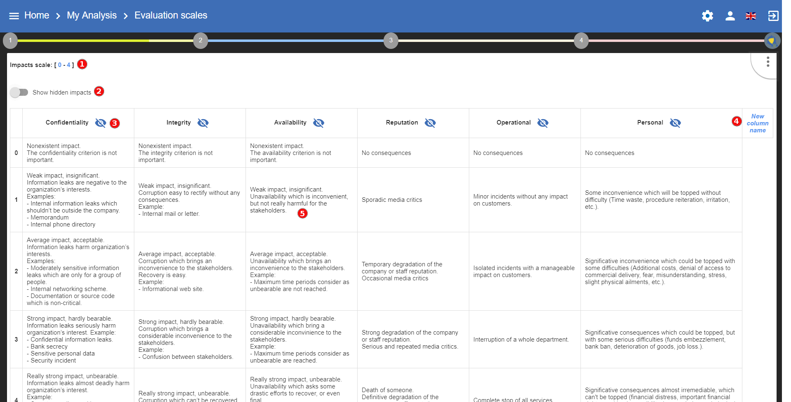
-
Click to modify the number of scales.
-
Click on
Show hidden impactsto show or hide the criteria not used in the analysis. -
Click on the symbol to hide an unused column.
-
Click on
New column nameto add a new impact criteria. -
Click to edit the headings of each scale.
|
the management is similar to an Excel table, by clicking on a heading, it is possible to edit it; clicking on another, the first heading will save automatically and so forth. |
By default, the impact and consequence scale includes the following criteria:
-
Confidentiality
-
Integrity
-
Availability
-
Reputation
-
Operation
-
Legal
-
Financial
-
Person (impact on the person)
It is also possible to add personalised consequences as well as impact criteria.
The same scales are used to process information risk and operational risk; there is simply a difference of interpretation :
3.4.2. Likelihood scale
The scale of threats is used to calculate information risks and the probability of scenarios relating to operational risks
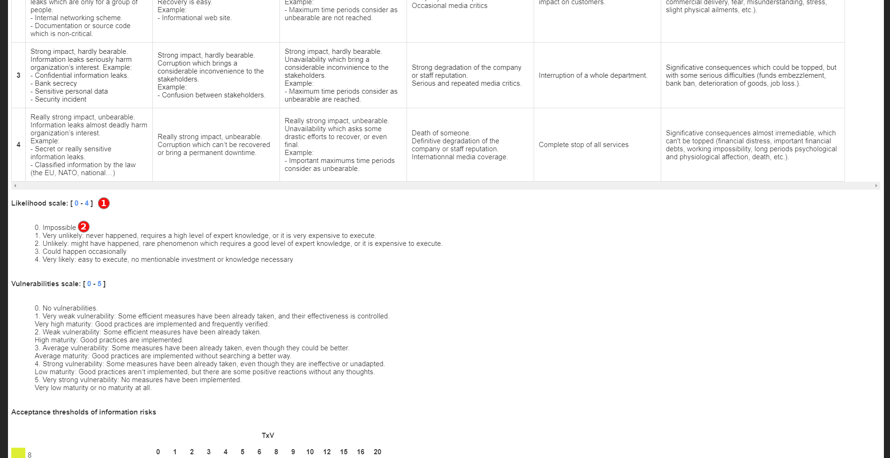
-
Click to modify the number of scales
-
Click to edit the heading on each scale (Management identical to the impact scale).
3.4.3. Vulnerabilities scale
The scale of vulnerabilities is only used for calculating information risks.
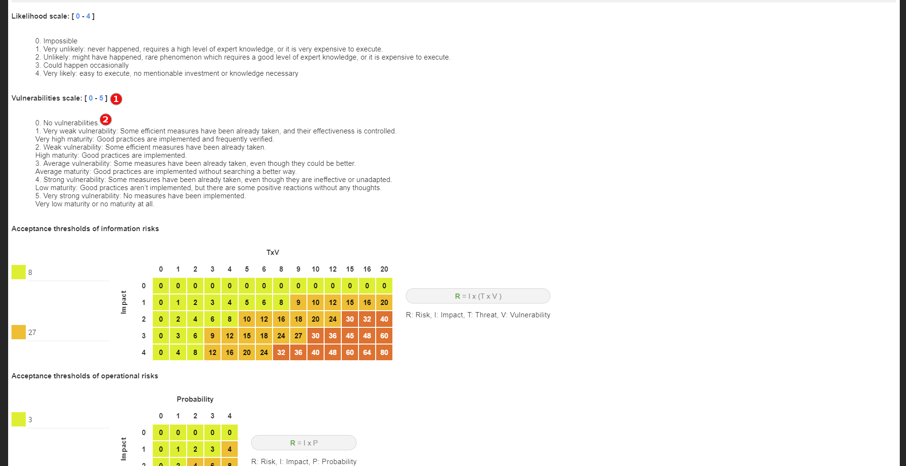
-
Click to modify the number of scales
-
Click to edit the heading on each scale (Management identical to the impact scale).
3.4.4. Acceptance thresholds
There are two separate tables for acceptability thresholds, as operational risk and information risk are not calculated in the same way. Information risks are calculated using three criteria:
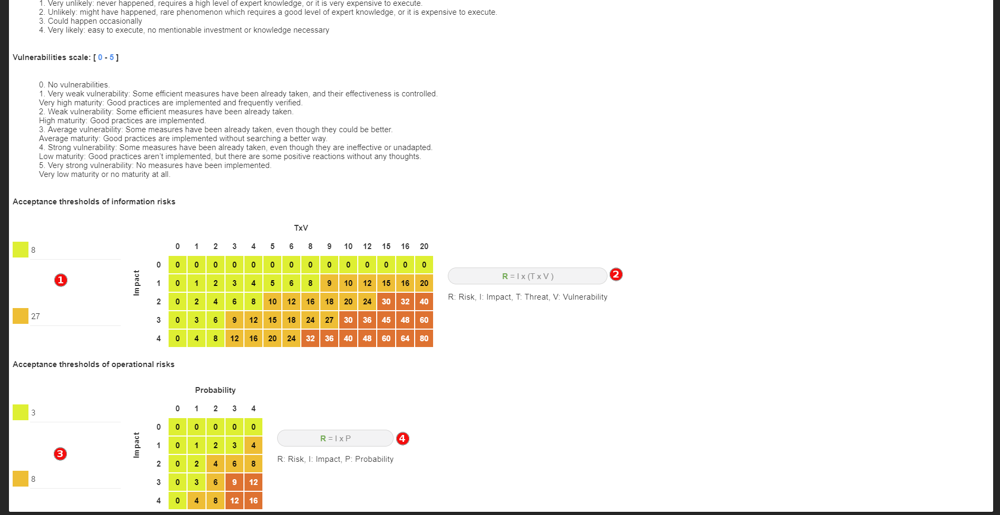
-
Modification of thresholds levels of informations risks. The table displayed above (as well as the risk analysis tables) is updated automatically.
-
Information risks are calculated using three criteria:
Impact x Threat x Vulnerability -
Modification of thresholds levels of operational risks. The table displayed above (as well as the risk analysis tables) is updated automatically.
-
Operational riks are calculated using two criteria:
Impact x Probability
3.5. Deliverable: Context validation
This deliverable includes all the information gathered and entered in the context establishment phase. It can be used to validate the information provided by the client, before beginning the risk identification.
A form has to be filled in. When the user clicks on Save, a file in Word format is generated.
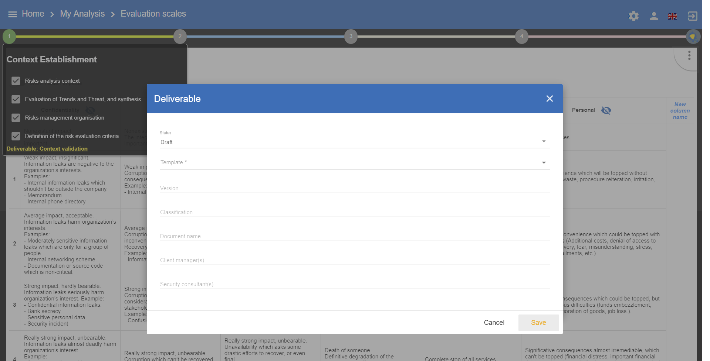
4. Context Modeling
By clicking on number 2, the following menu will appear:
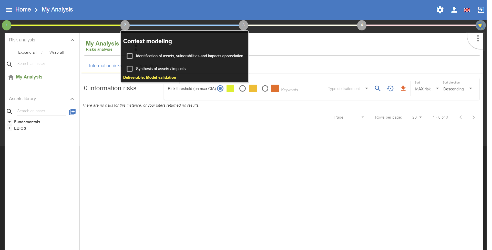
4.1. Identification of assets, vulnerabilities and impacts appreciation
4.1.1. Identification of assets
Clicking on the link Identification of assets, vulnerabilities and impacts appreciation will generate the main view of MONARC.
The purpose is to create the risk model by using the assets in the library.
The principle of the modelling is to place at the root the analysis of the primary assets, then place the support assets which make up the parts above it.
The context establishment phase is used for determining the primary assets which will be the subject of the analysis. At this stage of the analysis, certain secondary assets may already be known.
By default, MONARC offers a Front Office and Back Office structure; however, this is not an obligation. It is vital that the construction of the model follows a contextual logic, the assets and terms listed must use the organisation’s terminology. To do this, the user must not hesitate to rename the assets provided by default by the library.
Principe of the front office/back office structure
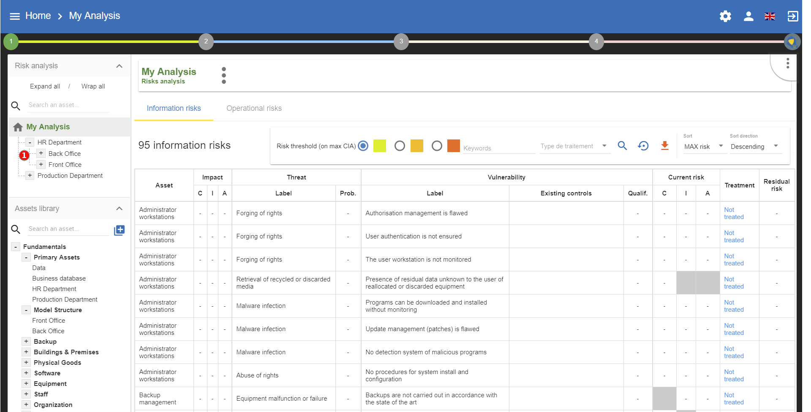
-
The
Front Officerepresents the “user” side; for example, in the case of a “Human Resources” department we will find employees and the complete IT system to which they have access (office, workstation, hardware, software, individuals, etc.).
TheBack Officerepresents the IT and organisational side of the organisation that are common to all concerned (building, data centre, network, administrators, common rules, etc.).
4.1.2. Impacts appreciation
For each primary asset, the impact and consequences which may apply must be defined, if the risks in the model arise. By default, all the supporting assets will inherit these impacts, but it is also possible to redefine them.
When the primary asset is a service, then the C (Confidentiality) and the I (Integrity) refers to the most sensitive information of the service in question. A (Availability) refers to the service and the information, based on the principle that if the information is available, the service will also be available.
When the primary asset is the information, there is no ambiguity regarding the CIA criteria - it refers to all the information.
In certain rarer cases, if the C associated with a service conveys the confidentiality of the operating procedure (e.g. manufacturing process), the user just has to express the assets in the model separately in the form of an informational asset and a service.
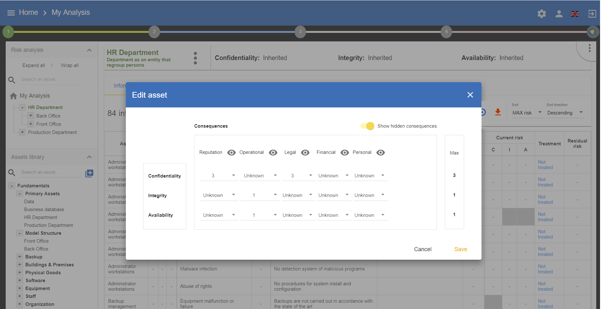
The value of the CIA criteria is deduced automatically according to the ROLFP consequences or other consequences which have been associated with them (maximum value).
For example: In the case of the abovementioned example, the 3 impact level on confidentiality is explained by the maximum ROLFP value regarding the confidentiality, which in this case is 3 in terms of consequence for the person.
4.2. Summary of assets/impact
The summary of the assets will provide editorial content that justifies the choice of assets and impact for the deliverable.
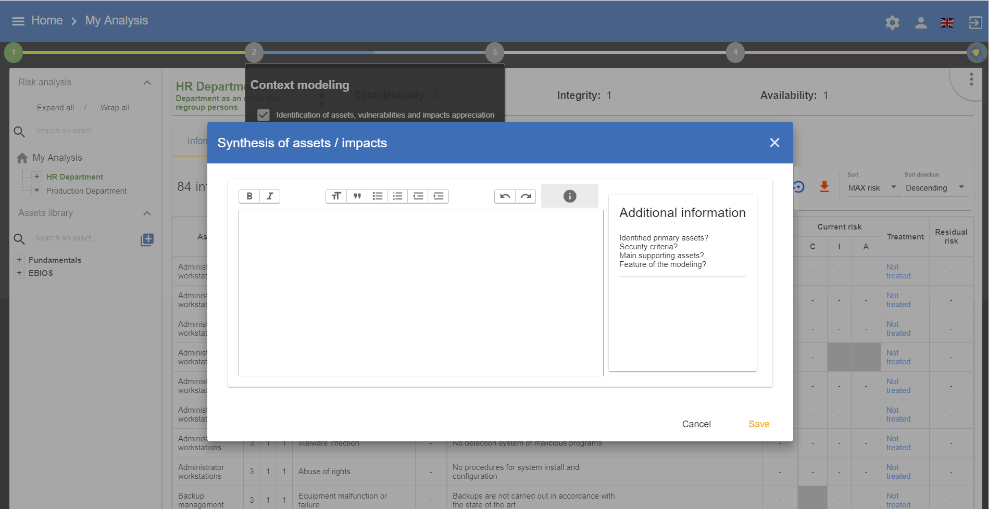
4.3. Deliverable: Validation of the model
This deliverable covers all the significant primary assets of the model.
|
Those on which the impact is reported as well as the asset summary. |
A form has to be filled in. When the user clicks on Save, a file in Word format is generated.
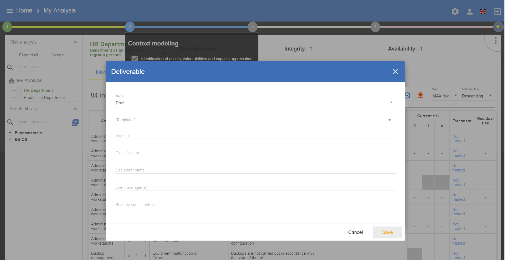
5. Evaluation and treatment of risks
By clicking on number 3, the following menu will appear:
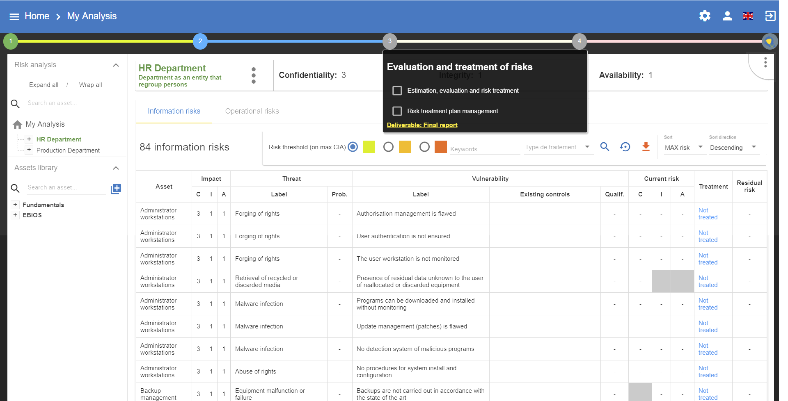
Clicking on the link Estimation, evaluation and risk treatment will generate the main view of MONARC.
5.1. Evaluation and treatment of risks
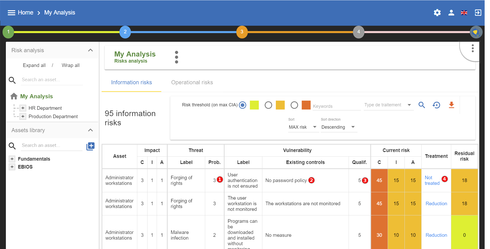
The previous phase provided the impact criteria information; now it is necessary to evaluate threats and vulnerabilities in order to calculate risk levels.
5.1.1. Assessment of the probability of threats
If the threat assessment made while establishing context provided probabilities (see Threats Assessment), it is necessary to return to this screen to run all the threats of the model.
-
Prob.: Then, when reviewing the model’s risks, the default values may all be revised individually.
5.1.2. Assessment of vulnerabilities
-
The level of vulnerabilities depends directly on the
existing controls. It is necessary to describe all these measures in a factual manner. -
The
qualificationof the vulnerability can be set according to theexisting controls.
5.1.3. Risk processing
-
Processing risks in MONARC, by clicking on
Not treated, involves, in similar fashion to ISO/IEC 27005, making a decision so as to process. There are four ways to process the risk:-
Accept: The risk is accepted in its current form. No additional action will be initiated. -
Modify/reduce: Measures are put in place to reduce the risk to an acceptable level. The reduction level is then evaluated in order to calculate the residual risk. -
Share: in the case of insurance, for example. This type of processing is specific, as it tends to reduce the risk impact and not the vulnerability. The residual risk cannot be calculated. -
Deny: The cause of the risk is eliminated; after processing, the risk must not longer be present.
-
|
It is also possible to add a recommandation to implement see Risk information sheet in user guide. |
5.2. Risk treatment plan management
All risks covered by one of the four procedures described above are registered in the risk management plan, irrespective of whether they are information risks or operational risks. The calculation formula is not the same for both types of risk; therefore, it is the importance of the recommendations which establish the order of risk. Nevertheless, it is possible to reset the order of the risk processing plan before generating the final deliverable.
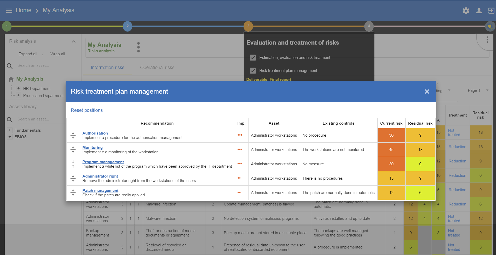
5.3. Deliverable: End report
The deliverable contains a complete list of all the information gathered and entered in MONARC, including that contained in the two previous deliverables.
A form has to be filled in. Moreover, it is possible to add a summary of risk evaluation. When the user clicks on Save, a file in Word format is generated.
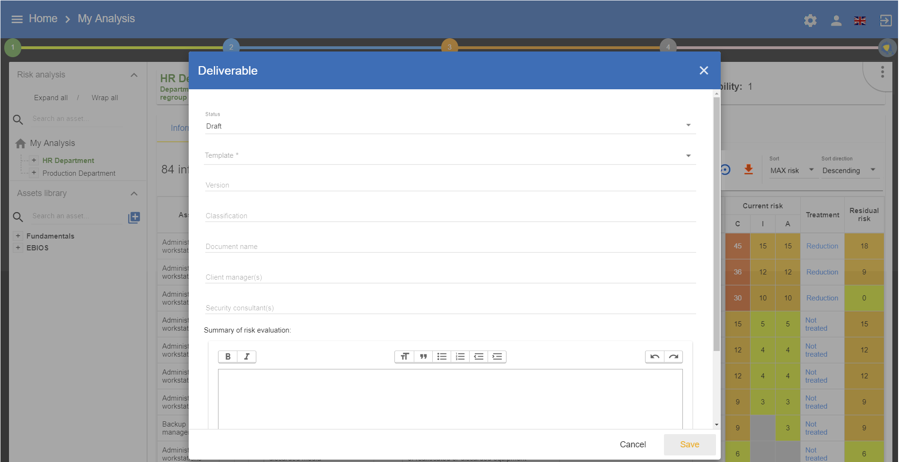
6. Implementation and monitoring
By clicking on number 4, the following menu will appear:
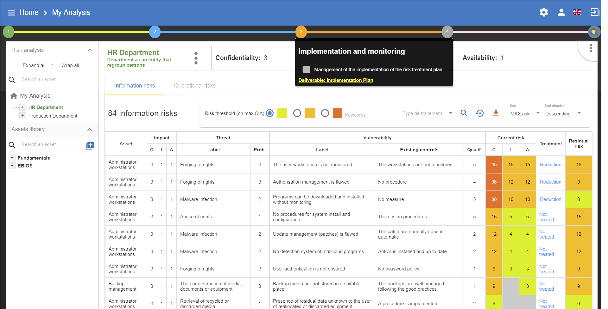
This view goes beyond the ISO/IEC 27005, as it enables the user to manage the follow-up to the implementation of the measures.
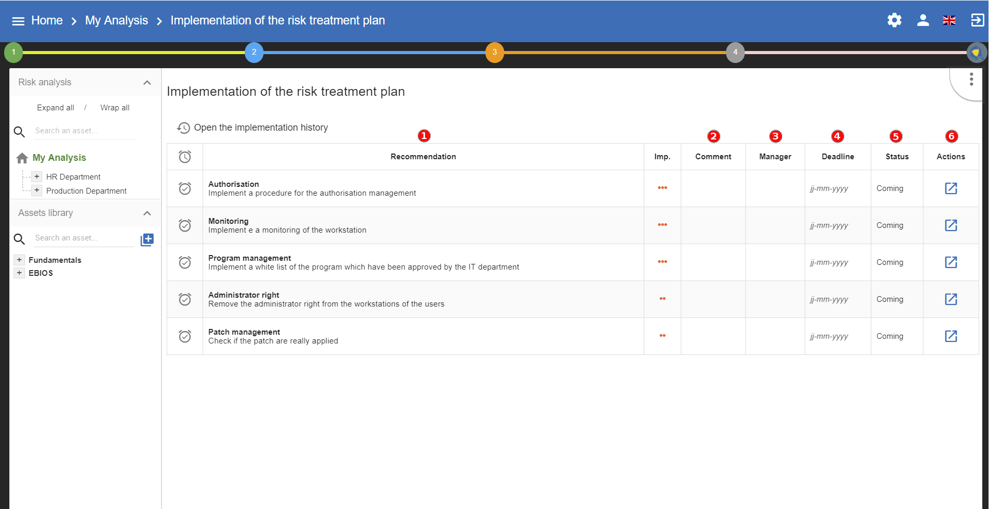
-
This is a
recommandationestablished before. -
You can put a
commentfor the implementation of the recommendation. -
For each recommendation you can set a
manager. -
For each recommenddation you can set a
deadline. -
Click on the icon to implement the recommenation and switch on the following view.
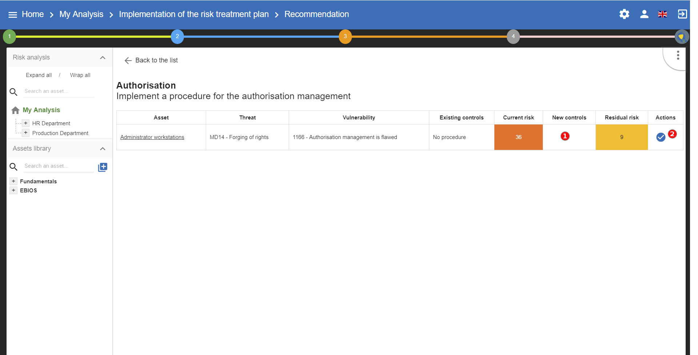
-
Set the
new control, now in place. It will replace the old one in the risk analysis and also replace the old current risk by the residual risk. -
Definitively validate the measure by clicking on icon
|
Follow the same procedure for each recommendation. After that go to your risk analysis and make a second iteration. |
6.1. Implementation history
All validations are stored in history and can be consulted:
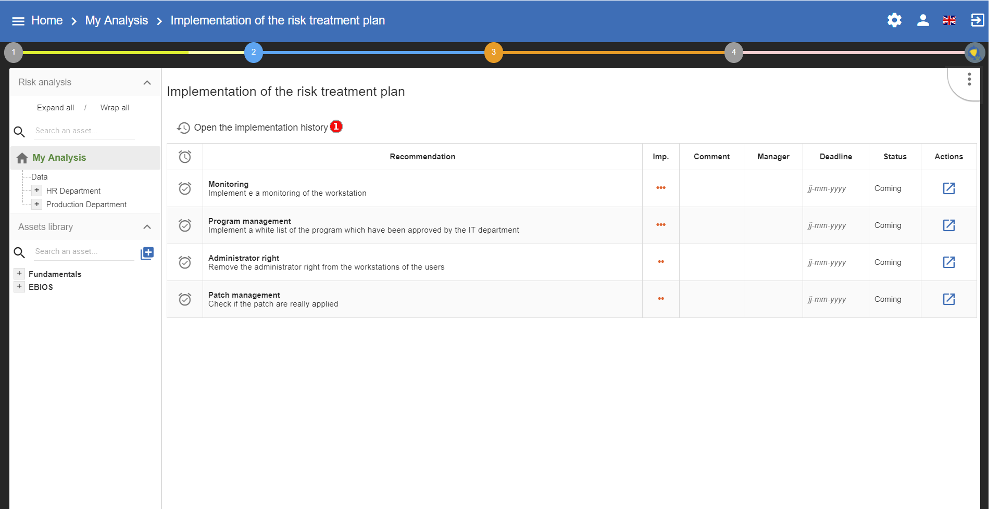
-
Click to view past recommendations
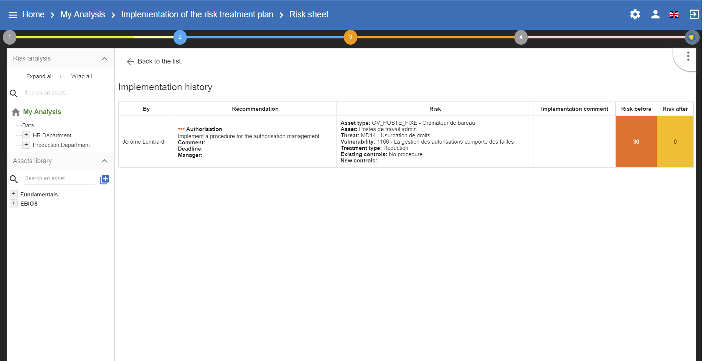
6.2. Deliverable: Implementation Plan
The deliverable contains the recommendations to implement table and the implemented recommendations table.
A form has to be filled in. When the user clicks on Save, a file in Word format is generated.
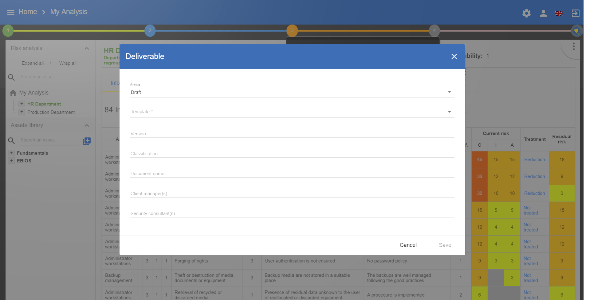